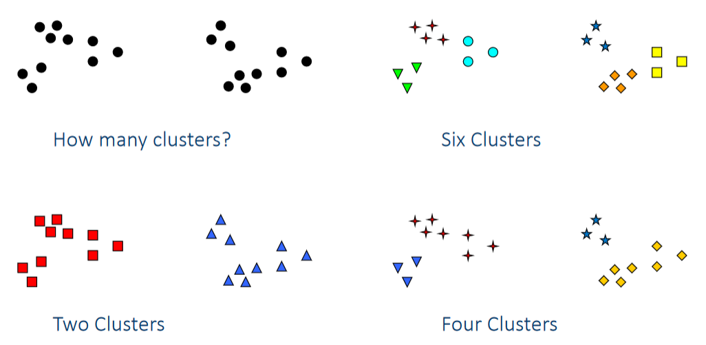
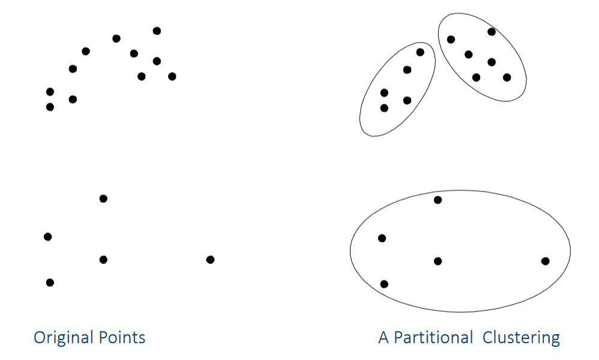
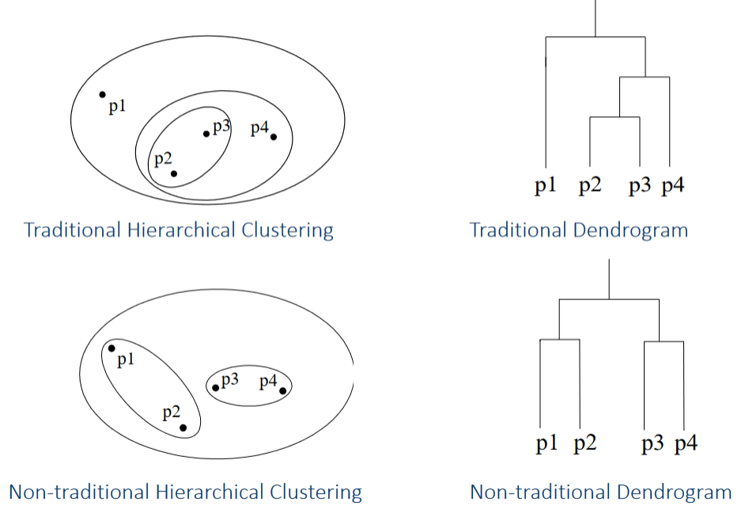
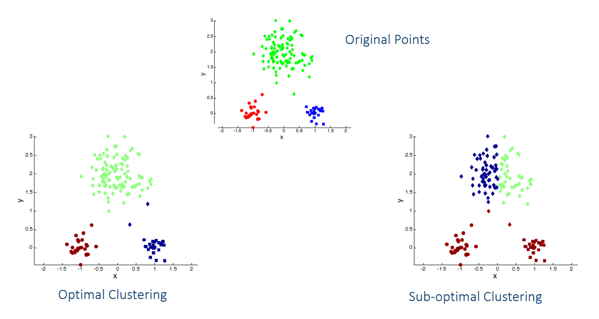

Clustering
Overview

- Basic concepts.
- Different approaches.
- Center-based Clustering
- Hierarchical Clustering
- Density-based Clustering.
- Clustering Validation.
- Harder to do than with classification.
- No label/class equivalent to check against.
What is Cluster Analysis?
Finding groups of objects such that the objects in a group will be similar to one another and different from the objects in other groups.
- Used for:
- Understanding.
- Summarization.
- Reduce size of large data sets.
- Clustering is a grouping of objects based on similarity.
- The notion of similarity is ambiguous.
What isn't Cluster Analysis?
- Simple segmentation.
- ex: Dividing students into different registration groups alphabetically by last name. (Too simple).
- Results of a query.
- Groupings are results of an external specification.
Types of Clusterings
- Partitional - A clustering of data objcets into non-overlaping subsets such that each object is in exactly one subset.
- Hierarchical - A set of nested clusters organized in a heirarchical tree.


- Exclusive vs. non-exclusive.
- In non-exclusive clusterings, points may belong to multiple clusters.
- Fuzzy vs. non-fuzzy.
- In fuzzy clustering, a point belongs to every cluster with some weight between 0 and 1.
- The weights must sum to 1.
- Well-separated clusters.
- A set of points such that any point in a cluster is closer to every other point in the cluster than to any point not in the cluster.
- Center-based clusters.
- A set of objects such that an object in a cluster is closer to the center of a cluster than to the center of any other cluster.
- The center of a cluster is often a centroid, the average of all the points in the cluster, or a medoid, the most "representative" point of a cluster.
- Contiguous clusters.
- A set of points such that a point in the cluster is closer to one or more other points in the same cluster than to any point not in the cluster.
- Density-based clusters.
- A dense region of points which is separated from other high density regions by low-density regions.
- Used when clusters are irregular or intertwined.
- Used when noise and outliers are present.
- Property or Conceptual.
- Finds clusters that share some common property or represent a particular concept.
Clustering Algorithms
K-means
- Partitional approach.
- Specify the number of clusters, .
- Each cluster is associated with a centroid.
- Each point is assigned to the cluster with the closest centroid.
Select K points as the initial centroids.
repeat
Form K clusters by assigning all points to the closest centroid.
Recompute the centroid of each cluster.
until The centroids don't change.
- Initial centroids are often chosen randomly.
- K-means is sensitive to the initial chosen centroids.
- The centroid is usually the average of the points in the cluster.
- Closeness is measured with Euclidean distance, cosine similarity, correlation, etc.
- K-means will converge for the common similarity measures mentioned above.
- Most of the convergence happens in the first few iterations.
- The stopping condition can be relaxed to "Relatively few points change clusters".
- Complexity is
- number of points.
- number of clusters.
- number of iterations.
- number of attributes.
Finding the ideal number of clusters, , is a difficult task.
We will often need to test various s.
Evaluating K-means Clusters
- Most common measure is Sum of Squared Error (SSE).
- Prefer the smallest SSE.
- For each point, the error is the distance to the nearest cluster (representative point).
- To get SSE, square all these errors and sum them:
- is a data point in cluster .
- is the representative point for cluster .
- One easy way to reduce SSE is to increase .
- SSE is not a perfect validation metric.
K-means Limitations
K-means is sensitive to initially chosen centroids: 
Issues when clusters are of differing:
-
Sizes.
-
Densities.
-
Non-globular shapes.
-
K-means has problems when the data contains outliers.